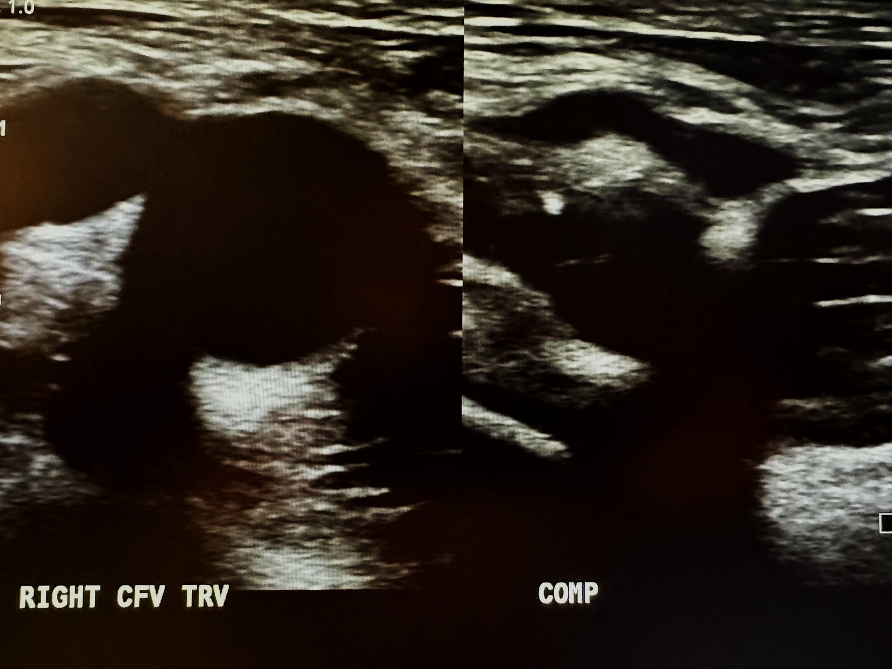

Normal vein with compression test (US)الوريد الطبيعي مع اختبار الانضغاط بالسونارNormal · الصورة الطبيعية
الحالة: الوريد الطبيعي ينضغط ويختفي تجويفه عند الضغط بالمسبار.
النمط: Greyscale (B-mode) — السائل (الدم) يظهر أسود عديم الصدى (anechoic)، والأنسجة المحيطة رمادية إلى بيضاء.
ما يُرى فيها: الوريد الفخذي المشترك (common femoral vein) دائري عديم الصدى (anechoic) قبل الضغط، وعند الضغط بالمسبار ينطبق جداره ويختفي تجويفه. إذا بقي مفتوحاً فهذا يرجّح وجود خثرة (DVT).
الوضعية: Transverse, right common femoral vein (without / with compression)